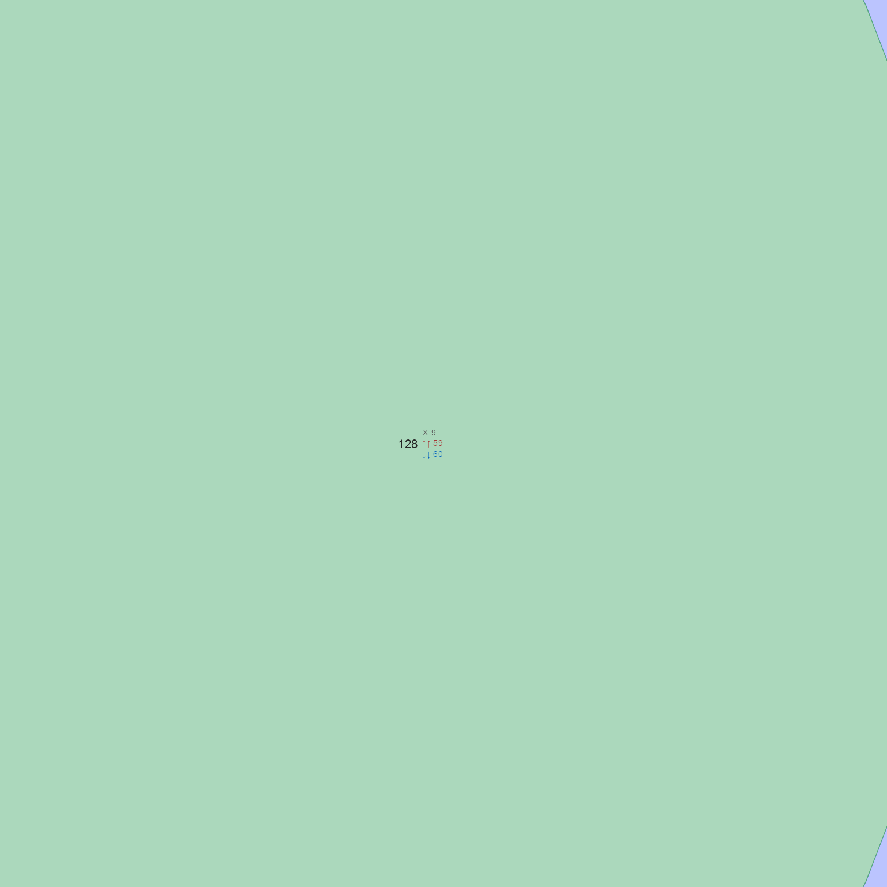
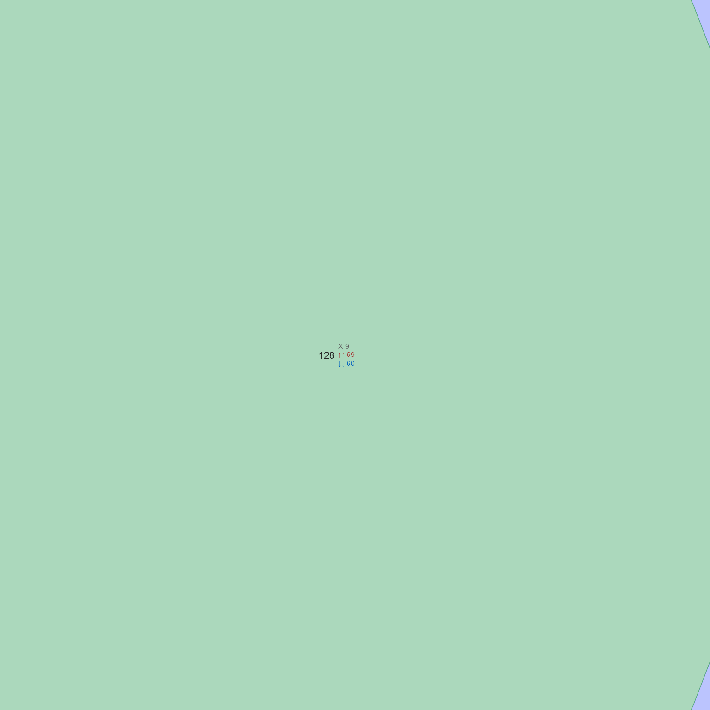

Make venndir hexSticker with simple labeling
Usage
hexsticker_venndir(
inspiration = c("arrows 2", "blank 2", "counts 2", "arrows 3", "plain 3", "blank 3",
"custom"),
venn_labels = NULL,
set_colors = c("#FFC700", "#637EFE", "#B22222"),
xyratio = 2.5,
fontfamily = "Arial",
item_cex = c(2.1, 2.1, 2.1),
fill = "#F2E4C8",
border = NULL,
pkg_color = "#214388",
pkg_family = "Avenir",
pkg_weight = "medium",
plot_x = 1,
plot_y = 1.23,
outerborder.lwd = 0.2,
innerborder.lwd = 0.2,
expand_fraction = c(-0.5, -0.5, -0.5, -0.45) * 9.2/9,
use_plot = NULL,
do_plot = TRUE,
bg = "white",
...
)Arguments
- venn_labels
characterlabels passed tovenn_meme()- set_colors
charactercolors used as set fill colors, default uses gold and medium blue.- xyratio
numericdefault 2.5, the x/y ratio used for label placement- fontfamily
characterfont used for item labels, default "Arial"- item_cex
numericitem font size adjustments, default is 2.1 for each label.- fill
characterfill for the hex sticker background, default is light sky blue.- pkg_family, pkg_weight
passed to
marquee::modify_style()to provide custom package font family, and font weight.- ...
additional arguments are passed to
venn_meme()and torender_venndir().
Value
sticker object defined in 'hexSticker'. Use plot() to
employ the appropriate plot command, which defines the device
size and aspect ratios accordingly.
Details
This function is an internal convenience function to create an
updated or customized venndir hex sticker, using the optional
hexSticker and ggplot2 packages to add some visual layers.
The text is drawn using marquee instead of ggplot2::geom_text()
which allows any 'systemfonts' compatible fonts to be used.
See also
Other venndir internal:
assemble_venndir_label(),
assign_degree_groups(),
check_systemfonts_family(),
expand_range(),
get_venn_polygon_shapes(),
make_degrees_clockwise(),
make_venn_combn_df(),
match_list(),
print_color_df(),
render_venndir_footnotes(),
shrink_df(),
simple_ellipse(),
subset_systemfonts(),
venndir_label_style(),
venndir_to_df()
Examples
h2 <- hexsticker_venndir()
h2b <- hexsticker_venndir("blank 2")
h2c <- hexsticker_venndir("counts 2")

 
h3a <- hexsticker_venndir("arrows 3")
h3b <- hexsticker_venndir("blank 3")
# example with custom labels
h2w <- hexsticker_venndir("custom",
venn_labels=c("venn",
"{.firebrick \u2191}{.royalblue3 \u2193}\n{.em ectionality}",
"dir"),
item_cex=c(1.5, 0.9, 1.6))
# example with PNG image files
vlogo <- path.expand("~/blip.png")
mlogo <- system.file(package="marquee", "help", "figures", "logo.png")
h2w <- hexsticker_venndir("custom",
venn_labels=c(
"venn",
paste0(""),
paste0("")),
item_cex=c(1.5, 0.9, 1.6))
# example using png loaded into a grid grob
if (requireNamespace("png", quietly=TRUE)) {
logo <- system.file(package="marquee", "help", "figures", "logo.png")
logo_grob <- grid::rasterGrob(png::readPNG(logo), interpolate=TRUE)
h2w <- hexsticker_venndir("custom",
venn_labels=c("venn",
"",
"dir"),
item_cex=c(1.5, 2.5, 1.6))
}

h3a <- hexsticker_venndir("arrows 3")
h3b <- hexsticker_venndir("blank 3")
# example with custom labels
h2w <- hexsticker_venndir("custom",
venn_labels=c("venn",
"{.firebrick \u2191}{.royalblue3 \u2193}\n{.em ectionality}",
"dir"),
item_cex=c(1.5, 0.9, 1.6))
# example with PNG image files
vlogo <- path.expand("~/blip.png")
mlogo <- system.file(package="marquee", "help", "figures", "logo.png")
h2w <- hexsticker_venndir("custom",
venn_labels=c(
"venn",
paste0(""),
paste0("")),
item_cex=c(1.5, 0.9, 1.6))
# example using png loaded into a grid grob
if (requireNamespace("png", quietly=TRUE)) {
logo <- system.file(package="marquee", "help", "figures", "logo.png")
logo_grob <- grid::rasterGrob(png::readPNG(logo), interpolate=TRUE)
h2w <- hexsticker_venndir("custom",
venn_labels=c("venn",
"",
"dir"),
item_cex=c(1.5, 2.5, 1.6))
}